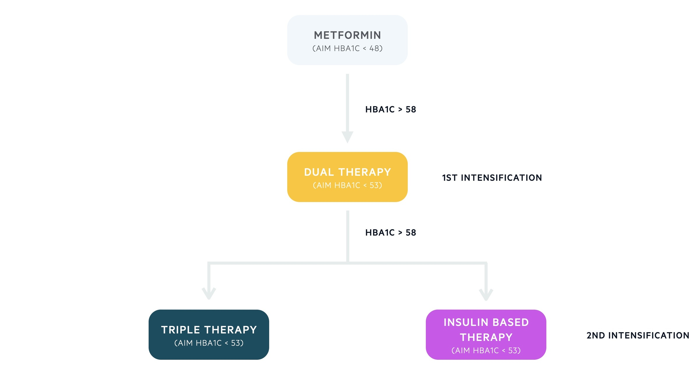
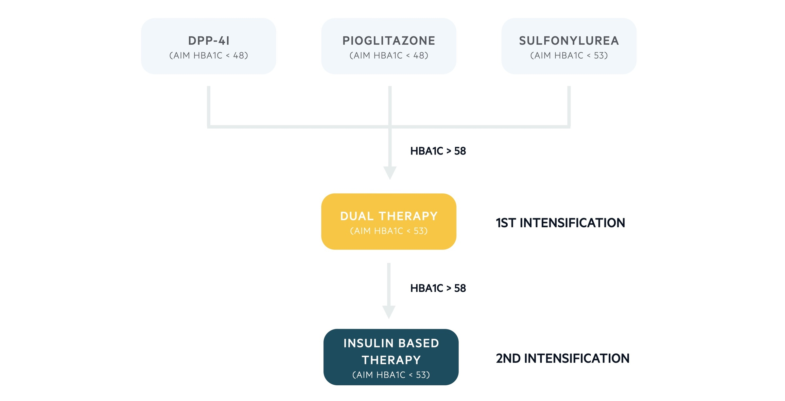

- Type 1: autoimmune beta-cell destruction → absolute insulin deficiency.
- Type 2: insulin resistance + inadequate insulin secretion.
- Gestational: diabetes first recognized in pregnancy.
- Other: genetic (e.g., MODY) and acquired (e.g., steroids, pancreatitis, pancreatic tumors).
What this is
Type 2 diabetes mellitus (T2DM) is driven by insulin resistance plus progressive beta-cell dysfunction, strongly linked to obesity and the metabolic syndrome.
Diabetes mellitus: main groups (quick framework) ⌄
Aetiology & risk factors (genetic + environmental) ⌄
Genetic risk
- Polygenic; many variants contribute to risk.
- Family history matters (risk higher if both parents affected).
- Some ethnicities (e.g., Asian/African ancestry) have higher risk.
Environmental risk
- Obesity + inactivity are major drivers.
- Diet (low fiber, high glycemic index), low birth weight.
- Medications, PCOS, history of gestational diabetes.
Clinical features (how it shows up) ⌄
- Lethargy/fatigue
- Polyuria, polydipsia
- Unintentional weight loss
- Recurrent infections (e.g., thrush, balanitis)
- Or incidental finding on routine testing
Mechanisms
Two core processes: peripheral insulin resistance and inadequate insulin secretion.
Insulin resistance (what breaks physiologically) ⌄
- Normally, insulin promotes glucose uptake in muscle and adipose via GLUT-4 translocation.
- It also has anabolic effects: ↓ lipolysis/proteolysis, ↓ hepatic gluconeogenesis, ↑ glycogen synthesis.
- With insulin resistance: impaired uptake + ↑ gluconeogenesis → hyperglycemia; catabolic drift (↑ lipolysis/proteolysis).
Early on you can see abnormal glucose regulation post-meal (impaired glucose tolerance, IGT) and/or fasting (impaired fasting glucose, IFG). These are often lumped as “pre-diabetes.”
Beta-cell dysfunction & “glucotoxicity” ⌄
As glucose rises, beta-cells must increase insulin output (hyperinsulinemia). Over time, high glucose (and lipids) may damage beta-cells (“glucotoxicity”), with progressive loss of beta-cell mass and eventual secretory failure.
Clinical translation: the longer T2DM runs uncontrolled, the more likely you’ll eventually need insulin support—not because “you failed,” but because beta-cells are finite biological hardware.
Diagnosis
Key tests: HbA1c, fasting plasma glucose, random glucose, and sometimes OGTT.
Diagnostic thresholds (US units with UK in brackets) ⌄
| Test | Diabetes threshold | Prediabetes / at-risk |
|---|---|---|
| HbA1c | ≥ 6.5% (≥ 48 mmol/mol) | 6.0–6.4% (42–47 mmol/mol) in the source article’s framework |
| Fasting plasma glucose | ≥ 126 mg/dL (≥ 7.0 mmol/L) | 108–124 mg/dL (6.0–6.9 mmol/L) = IFG |
| Random plasma glucose | ≥ 200 mg/dL (≥ 11.1 mmol/L) | Not typically used alone for diagnosis in the source notes |
| OGTT (2-hour) | ≥ 200 mg/dL (≥ 11.1 mmol/L) | 140–199 mg/dL (7.8–11.0 mmol/L) = IGT |
Note: mg/dL conversions use mg/dL ≈ mmol/L × 18. Values are rounded so they match how clinicians talk.
How to interpret HbA1c (and when it lies to you) ⌄
HbA1c reflects average glycemia over ~3 months. In the source notes, a single diagnostic HbA1c can be sufficient in symptomatic patients; if asymptomatic, confirm with a second abnormal result (HbA1c or an additional test such as fasting glucose).
Use caution / consider alternatives when red cell biology is altered:
- Changed erythropoiesis (e.g., iron deficiency, EPO use)
- Hemoglobin variants/hemoglobinopathies
- Altered glycation environments (e.g., CKD, alcoholism) per source notes
- Altered red cell survival (e.g., hemolysis, post-splenectomy)
Management
Core pillars: education + lifestyle + meds + monitoring for complications.
Lifestyle (the part that’s annoyingly powerful) ⌄
- Diet: more fiber, lower glycemic index carbs, moderate high-fat foods; weight loss strategies if overweight.
- Exercise: improves glucose utilization by muscle; aim for regular moderate-intensity activity.
- Alcohol moderation and smoking cessation.
Medication ladder (as shown in the source article) ⌄
Baseline: Metformin (unless contraindicated or not tolerated).
| Step | What the source notes suggest | HbA1c targets (US% with UK in brackets) |
|---|---|---|
| Step 1 | Standard-release metformin; titrate; monitor renal function; consider modified-release if GI side effects. | < 6.5% (< 48 mmol/mol) |
| Step 2 1st intensification |
Dual therapy if HbA1c rises above 7.5% (58 mmol/mol): metformin + one of SU, DPP-4i, pioglitazone, SGLT2i. | < 7.0% (< 53 mmol/mol) |
| Step 3 2nd intensification |
Triple therapy or insulin-based regimen if HbA1c remains above 7.5% (58 mmol/mol). | < 7.0% (< 53 mmol/mol) |
| Step 4 | Further intensification: consider metformin + SU + GLP-1 RA (with criteria in the source notes); if already on insulin-based therapy, seek specialist advice. | Individualize |

Alternative ladder if metformin contraindicated

Insulin in T2DM (when and how the source frames it) ⌄
The source notes emphasize considering insulin earlier when glycemic control is poor despite dual therapy, while balancing hypoglycemia risk, weight gain concerns, and practical constraints (education, monitoring, driving rules, etc.).
- NPH (intermediate-acting) once/twice daily
- Intermediate-acting + short-acting (separate injections or premix)
- Long-acting basal (e.g., glargine, detemir) — used when NPH hypoglycemia is problematic or injection support needed
- Basal–bolus conversion if premix still inadequate
Targets & Follow-up
Targets are HbA1c-based, but should be individualized.
HbA1c monitoring frequency + typical targets ⌄
- Poor control: HbA1c every 3 months
- Stable disease: HbA1c every 6 months
| Situation | Target in US% (UK mmol/mol) |
|---|---|
| Lifestyle only | < 6.5% (< 48 mmol/mol) |
| Lifestyle + single agent | < 6.5% (< 48 mmol/mol) |
| On hypoglycemia-associated drug (e.g., sulfonylurea) | < 7.0% (< 53 mmol/mol) |
| Higher intensification regimens | < 7.0% (< 53 mmol/mol) |
Individualize targets for hypoglycemia risk, limited life expectancy, comorbidity burden, and expected long-term benefit.
Annual review checklist (what to screen for) ⌄
- BMI, smoking status, psychosocial screening (anxiety/depression)
- Retinopathy: annual retinal screening
- Nephropathy: eGFR + urine albumin/creatinine ratio
- Neuropathy/foot: exam, monofilament, vascular assessment ± Dopplers
- CV risk: BP + lipids optimization; prevention strategy
Complications
Think microvascular (eyes, kidneys, nerves) and macrovascular (atherosclerosis).
Acute complications: hypoglycemia, HHS, and sometimes DKA ⌄
- Hypoglycemia
- Hyperosmolar hyperglycemic state (HHS)
- DKA can occur in some T2DM patients with marked insulin deficiency; evaluate ketones, pH, bicarbonate in unwell presentations.
Microvascular: retinopathy, nephropathy, neuropathy, diabetic foot ⌄
Retinopathy (NSC-UK classification in source)
- R1 background: dot/blot hemorrhages, hard exudates, cotton-wool spots
- R2 pre-proliferative: IRMA, venous beading
- R3 proliferative: new vessels (NVD/NVE), fibrosis, traction retinal detachment
- Maculopathy: exudates/edema, NVE
Photocoagulation reduces ischemic drive (e.g., VEGF) in proliferative disease.
Nephropathy
UK uses ACR in mg/mmol; US commonly uses mg/g.
| Category | US mg/g (UK mg/mmol) |
|---|---|
| A1 (normal–mild) | < 27 mg/g (< 3 mg/mmol) |
| A2 (moderately increased) | 27–265 mg/g (3–30 mg/mmol) |
| A3 (severely increased) | > 265 mg/g (> 30 mg/mmol) |
Approx conversion: mg/g ≈ mg/mmol × 8.84 (rounded).
Note: the source text mentions “eGFR < 60 mmol/L” which is a unit typo; clinically this is eGFR < 60 mL/min/1.73m².
Neuropathy
- Symmetric polyneuropathy (stocking distribution sensory loss)
- Mononeuropathy (e.g., CN III palsy)
- Diabetic amyotrophy (lumbosacral plexopathy)
- Autonomic neuropathy: orthostasis, gastroparesis, diarrhea, bladder dysfunction, ED
Diabetic foot
- Neuropathy + ischemia → ulcers, infection (cellulitis/osteomyelitis), necrosis, amputation risk
- Charcot joint: neuropathic arthropathy with microtrauma → remodeling, swelling, deformity
Macrovascular: ASCVD risk and prevention ⌄
Diabetes increases atherosclerosis risk. Prevention focuses on smoking cessation, exercise/nutrition support, lipid management (e.g., statin therapy), and blood pressure control (often ACE inhibitor/ARB where indicated).